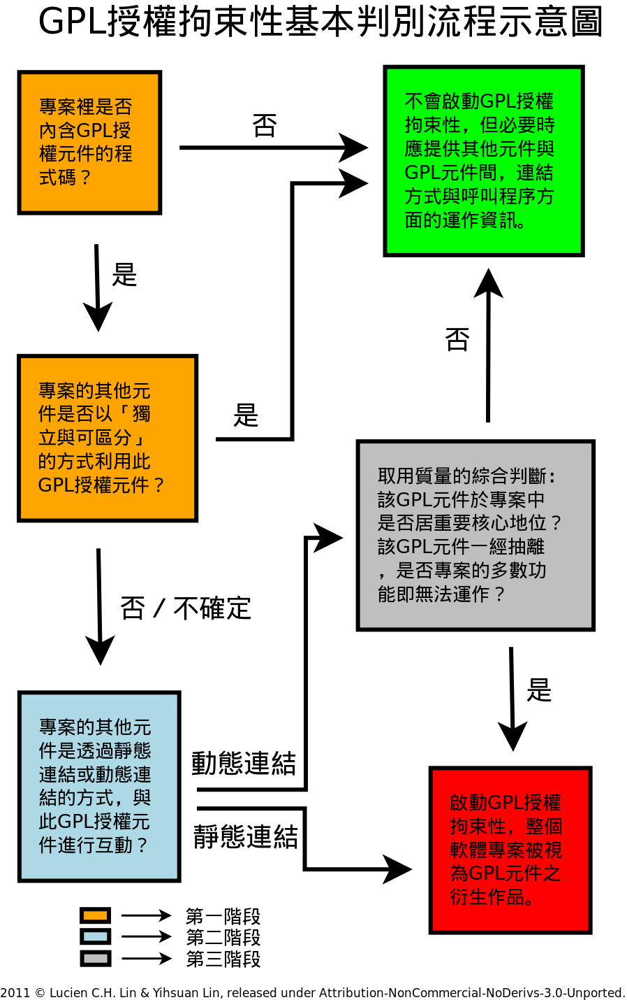
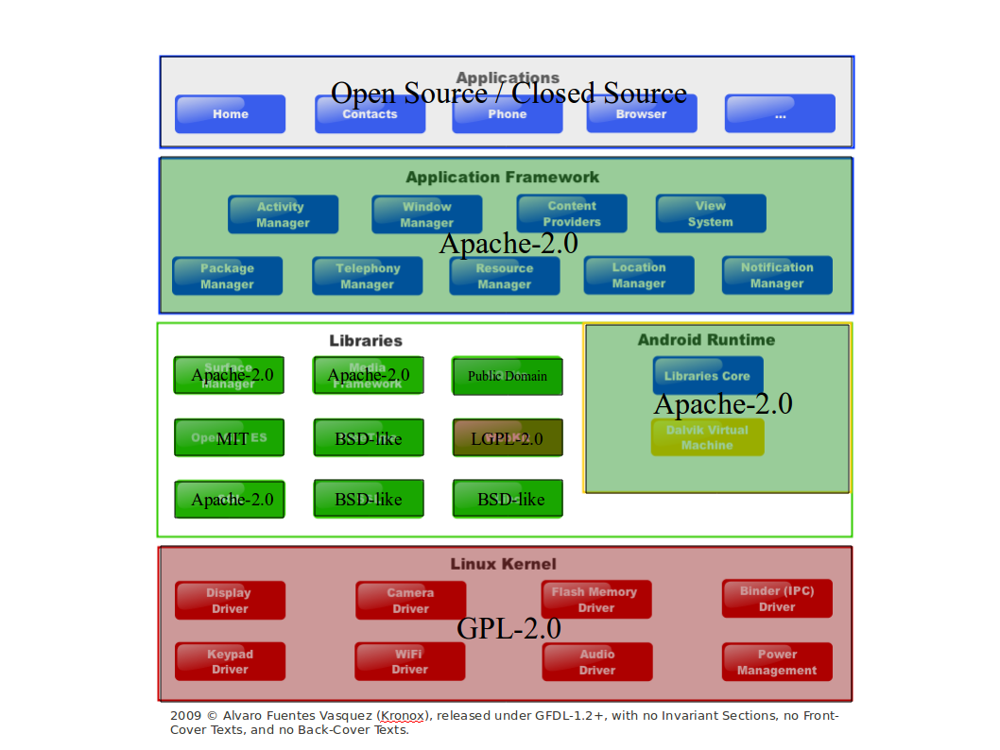

GPL 條款對於衍生程式的判定標準與其授權拘束性的擴散範圍（下）

【實務上對 GPL 衍生程式可資操作的基本判別流程】
綜上所述、關於 GPL 衍生程式的判定標準，以及其授權拘束性的擴散範圍，可以歸納出三個可資操作的基本判別流程：
- 該軟體專案中是否內含 GPL 授權元件的程式碼？若是如此，該專案是否已明確適用該 GPL 元件授權人認同的獨立與可區分機制，來利用這個元件？
- 軟體專案裡的其他元件是透過靜態連結，抑或是動態連結的方式與該 GPL 授權元件進行互動？
- 若是採用動態連結的互動方式，則此 GPL 授權元件所提供的功能是否居於整個軟體專案的核心地位？是否失去此一 GPL 授權元件的連結，則整個軟體專案的多數功能便不復完整？
以上三個基本判別流程可以用「原則 VS. 例外」的比較邏輯來理解，第一階段、軟體專案中若是內含 GPL 授權元件的程式碼，則原則上 GPL 元件的授權拘束性已經啟動，該軟體專案裡的其他元件會受到 GPL 授權條款所拘束，然而、例外的狀況是，雖然該軟體專案內含 GPL 授權元件的程式碼，但是其他元件得以主張是以「獨立與可區分」的方式來利用這個 GPL 授權元件，便可例外地不受到 GPL 授權拘束性所及；接著、進入了第二階段的判別流程，軟體專案裡的其他元件究竟是透過靜態連結的方式，抑或是動態連結的方式來與 GPL 授權元件互動？原則上若是靜態連結的互動方式，則因為元件與元件之間傾向是高度相依的融合 (merge) 關係，此時整個軟體專案會被認定是 GPL 授權元件的衍生作品，而在後續散布時會被要求全部得依照 GPL 授權條款的方式，提供整體專案的程式源碼；而若是其他元件是以動態連結的機動方式呼叫 GPL 元件的功能表現，那麼這時候才會進入第三階段的判別流程，個案的去判別該 GPL 授權元件所提供的功能，在質的一方面，於整個軟體專案裡是否居於重要的核心地位？或是就量的方面，是否 GPL 元件一經抽離之後，就會造成軟體專案多數的功能不復完整？如果此二個子問題的答案皆為「是」，則此 GPL 元件的授權拘束性仍然有可能及於整個軟體專案，而若此二個子題的答案皆為「否」，則此元件的授權拘束性原則上不及於其他元件，但使用者在散布它時，仍應提供其他元件與此 GPL 授權元件間，連結呼叫與互動對應程序方面的必要資訊。透過以上三個流程的自我檢驗，GPL 授權元件的使用者便可知悉該元件，所可能為整個專案帶來授權拘束的基本可能性與風險性，其實際的操作步驟請參照下圖所示：

▲ 圖2 GPL 授權拘束性基本判別流程示意圖
【Android 因中介隔層例外地主張獨立性與可區分性】
此外、關於 GPL 對於衍生程式的判定標準還有一個時興的子議題，那就是近年業界不乏利用中介隔層 (middle layer) 的方式，來區隔 GPL 元件所可能帶來的授權拘束性，最顯著的例子、就是 Google Android 所規劃出來的中隔平台。Google Android 平台的授權架構，底層為 GPL-2.0 授權的 Linux Kernel，而中介隔層採用的是 BSD 類別或是 LGPL-2.1 類別授權的函式庫 (library)，以及 Apache-2.0 授權的 runtime system，而此中介隔層之上還有中介應用程式及函式庫的溝通框架 (application framework)，最上層才是讓個別廠商自行開發的應用程式 (application program)。透過這樣中介隔層的機制，Google Android 平台上層的應用程式僅與中層的函式庫溝通與互動，而底層 Linux Kernel 也僅與中層的函式庫溝通與互動，從而上層的應用程式並不會直接與底層的 Linux Kernel 直接溝通，故而以此點來主張這些應用程式在執行上與功能表現上，具有不一定受到 Linux Kernel 影響的「獨立性與可區分性」；除此之外、更重要的一點是：Google Android 中介隔層的函式庫與 runtime system，完全以無授權拘束性或是弱授權拘束性的自由開源軟體元件來營建。也就是說、中介隔層部份依其授權方式，對外是可以提供程式源碼並允許後續散布的，理論上這樣的中介隔層便具有實作上「可移植的可能性」，若是有程式開發者願意花費時間將此中介隔層移植至其他非 Linux Kernel 的作業系統上去運作，並非完全沒有可能，而既然中介隔層與採用 GPL-2.0 授權的 Linux Kernel 之間具有「可移植、可拆解」的「獨立性與可區分性」，那也就有機會被認定為除外於 GPL 的授權衍生範圍，而不用受到 GPL-2.0 授權條款的擴張拘束（註七）。

▲ 圖3 Google Android 平台中介隔離的授權架構圖
Google Android 平台這種中介隔離 GPL 授權拘束性的作法，在業界也不乏見其他的類似作法（註八），然而這些中隔手法、也並非完全不會引發授權爭議，舉 Google Android 平台為例，其之所以可以成功運行，第一點是由於 Google Android 平台中介隔層的架構完整、佈局嚴密，所以不易被自由開源軟體社群的參與者，直接視之為以簡陋的中隔介面惡意規避 GPL 授權條款的義務性規定；第二點、也是最重要的一層因素，是因為 Linux Kernel 核心開發群與其精神領袖 Linus Torvalds，對於 GPL-2.0 授權條款在衍生程式範圍上的解釋態度較為寬鬆，其認為 Linux Kernel 之上存有不必然受到 Kernel 授權狀態拘束的獨立使用者空間 (user space)，所以取用 Linux Kernel 的 Google Android 平台便可依此觀點對 Linux Kernel 進行中隔處理。而雖然 Linux Kernel 多數核心開發群同意這樣的觀點，但並不能類推其他由不同權利人管理的 GPL 授權專案，都會同意以此種中介隔層的方式，能將 GPL 元件的授權拘束性完全隔離掉，所以、若是要將日後可能產生的法律爭訟與侵權風險降到最低，在很多不同狀況的案例上，還是得依所使用 GPL 授權元件的細部資訊，來進行個案式的判斷。
【是否開啟 GPL 授權拘束性仍需考究實務的個別情況】
單純在專案裡利用 GPL 授權元件並不必然會開啟其授權拘束性，有時候授權拘束性的疑慮和恐懼，其實是被使用者誤解並且過度擴大解讀了（註九）。本文初始之所以採用「牽一髮而動全身」這樣的說法來比擬 GPL 元件的授權拘束性，便是利用簡明的比喻提醒讀者，個別的 GPL 元件若是採用動態連結的方式來與其他元件互動，或是專案開發者也能夠找到其他授權方式的元件將其所負責的功能代換掉，這些跡象都可以證明該元件實際上與整個軟體專案在開發上的關聯不深，就像一拔而起的單一毛髮，並不會將其 GPL 的授權拘束特性傳導到專案的其他部份；然而、若是該 GPL 授權元件是採用靜態連結的方式來與其他元件互動，或是在功能表現上居於專案的核心定位，那麼此一 GPL 授權元件在運作上便與整個軟體專案密不可分，從而並不是那麼輕易地可以被更換、代替，此時就像是一串與頭皮緊密連結 (link) 的毛髮，無法輕易拔除並且關聯撼動全身，那麼該軟體專案的其他元件便會被視為是 GPL 授權元件的衍生作品，從而整體專案便進入了 GPL 授權拘束特性的擴散範圍。
但無論如何，目前關於 GPL 授權拘束性的擴散範圍，全球仍然沒有確定的司法判決是就此議題進行細節釐清與範圍界定的。所以此議題相關的評論與看法，並沒有一個完全權威並可據以簡單判斷的遵循法則，有時複雜的狀況、也仍然處於「一個 GPL 授權拘束性、個自解讀」的灰色地帶。本文僅先就此議題原則性的重要指南進行論述，提供一至三個基本步驟來讓讀者自我完成簡易驗證之用，而若是特定 GPL 授權元件的採用關係，是涉及大型商用專案或是元件互動性複雜的狀況，則建議還是應該個案式的依元件實際互動的方式，以專案分析的方式來做細節上的評判。
其他與此議題相關的重要參考文章羅列如下，以供對此議題有興趣的讀者，可以據此查證原典：
- Linus Torvalds 於網路討論串裡，發表其對 GPL 授權拘束性的意見與立場：https://linuxmafia.com/faq/Kernel/proprietary-kernel-modules.html
- Lawrence Rosen 所著專文「General Public License, Explained」，說明 GPL 授權元件的授權拘束性範圍，以及推廣「License Inheritance」此一嶄新名詞：https://www.sitepoint.com/public-license-explained/
- Carsten Emde 於 2008 年 11 月的演講簡報，綱舉目張的解釋了運作在 user space 下的驅動程式與 Linux Kernel 之間的授權拘束性關係：https://www.osadl.org/fileadmin/dam/presentations/FAPI-UIO-SPS-2008.pdf
- Greg Kroah-Hartman 於其 2006 年提供的演講中，批論不提供程式源碼的專屬驅動程式，違反了 GPL 條款的授權拘束性：https://www.kroah.com/log/linux/ols_2006_keynote.html
- Greg Kroah-Hartman 於 2006 年 8 月發表 UIO 作法的說明頁面：https://lkml.indiana.edu/hypermail/linux/kernel/0608.3/1908.html
- Jonathan Corbet 2004 年 1 月 於 LWN.net 的報導，討論 user space 驅動程式的技術內容：https://lwn.net/Articles/66829/
註七：此種中介隔離的互動架構在 GPL-2.0 授權條款裡並沒有明文述及，但在 GPL-3.0 裡開始有簡要的描述，一般對此機制的通俗用語為「well defined interface」，其於 GPL-3.0 授權條款的主要描述位於第 1 條第 3 項 (b) 款：serves only to enable use of the work with that Major Component, or to implement a Standard Interface for which an implementation is available to the public in source code form.
註八：另一種硬體裝置驅動程式 (driver) 方面的 UIO 中介隔離模式 (the user space I/O system)，其實也與 Google Android 平台的作法十分類同，其也是在應用程式及 Linux Kernel 之間隔一層以 LGPL、BSD、MIT 等，可以為 GPL-2.0 授權方式「吸納同化 (merge)」的函式庫程式做為中介，然後再將驅動程式內含的重要演算法撰寫在應用程式的層級，以運作在 user space 的方式，間接透過中介的函式庫來與 Linux Kernel 進行互動與存取，透過這樣的區隔方式，也有許多自由開源軟體專案的程式開發者認為，寫在應用程式層級的驅動程式，有機會不被列入 Linux Kernel 授權拘束性的擴散範圍。
註九：相關的評論與說明，可參照 Lawrence Rosen 所著專文「General Public License, Explained」：https://www.sitepoint.com/public-license-explained/
您也許有興趣閱讀以下文章:
- GPL 條款對於衍生程式的判定標準與其授權拘束性的擴散範圍（上） - 2011-09-15
自由軟體鑄造場電子報 : 第 183 期 GPL 條款對於衍生程式的判定標準與其授權拘束性的擴散範圍（下）
標籤: GPL 區隔機制, Copyleft, Coder 必讀, Linux Kernel, Open Source, 法律專業, 授權拘束性, 源碼混入, GPL, GPL2, GPL3,
分類: 法律專欄